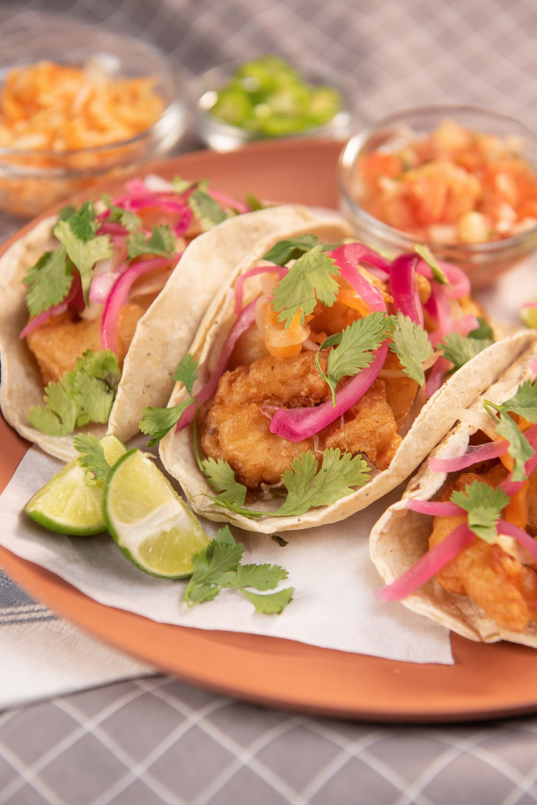

Fish Tacos

Description
This is a recipe for zesty fish tacos!
I hope you enjoy it!
Ingredients
- White fish (Tilapia is used here)
- Tortillas (Corn or Flour)
- Sour cream
- Plain Greek yogurt
- Red cabbage
- Roma tomatoes
- Sriracha
- Black pepper
- Smoked cayenne pepper
- Celery salt
- Limes
- Cilantro
- 2 tablespoons of melted butter
- Cojita cheese
Steps
- Preheat oven to 350 degrees.
- Mix 1/4 teaspoon of all spices and coat both sides of the white fish.
- Spread melted butter over top of the white fish.
- Place fish into the oven for baking, bake until brown (between 15-18 minutes).
- Chop the veggies.
- Mix 1 cup of sour cream and 1 cup of plain yougurt.
- Add sriracha to taste.
- Stir in 1/8 teaspoon of black pepper, 1/4 teaspoon of smoked cayenne pepper.
- Stir in 1/4 teaspoon of celery salt.
- Slice limes.
- Chop the cooked fish into slices.
- Lightly toast the tortillas.
- Add cojita cheese and spread some white sauce on tacos to taste.